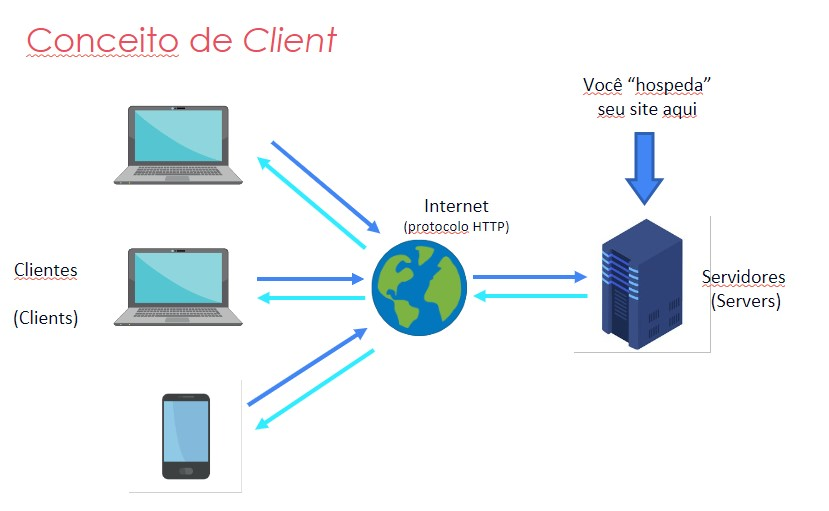

Em um breve resumo, os computadores modernos estão divididos em 5 gerações, onde a 1ª geração tinham computadores que ocupavam grandes salas em universidades, como o Harvard Mark I (1944), e também o Colossus (1946) e o ENIAC (1946). Utilizados para realização de cálculos, principalmente devido a 2ª Gerra Mundial.
Já os computadores da 2ª Geração (1959 a 1965) já ocupavam grandes mesas, com máquinas bem menores que a geração anterior. Foi nesta 2ª geração a criação dos Transistores.
Já a 3ª Geração (1965 a 1970) teve uma evolução na criação do Circuito integrado (Transistor, Capacitadores e Resitores), chips menores que permitiu a criação de máquinas menores, com tamanho para ficar em cima de uma mesa. Ainda eram um uso praticamente exclusivo por empresas e governos.
A 4ª Geração (a partir de 1971) teve a popularização dos PCs (Personal Computers), com ampla expanção em todos os setores, e posteriormente a criação de dispositivos cada vez menores, como smartphones e tablets, e computadores com capacidade de processamento extraordinários.
A 5ª geração está marcada pelo desenvolvimento da Inteligência Artificial (AI), criptomoedas e da Indústria 4.0, conectando diversos dispositivos com a IoT (Internet das Coisas)
A Internet surgiu originalmente como uma pesquisa sobre a computação de pacotes devido a Guerra Fria, estre as décadas de 1950 e 1960, onde a partir daí as redes foram evoluindo, como a ARPANET, rede entre universidades e centros de pesquisa.
Após anos de estudos e evolução das redes e protocolos, na década de 90 as últimas restrições foram removidas, possibilitando o uso comercial em escala mundial.
No Brasil, em 1995 foi criado o Comitê Gestor da Internet, órgão que ficou responsável em estabelecer as diretrizes para a navegação no país. Rapidamente, assim como no mundo todo, a rede ganhou força ao passar dos anos.
A rede mundial de computadores é ligada de diversas formas, via rário, cabos telefônicos, cabos de redes etc, neste caso em redes menores, e em grande escala por satélites e cabos submarinos de fribra óptica, onde o desempenho de velocidade é muito superior. O cabo óptico também é o novo padrão para as áreas urbanas para ter a melhor velocidade na trânferência dos dados.
Client é a infraestrutura cliente-servidor, onde o cliente é um dispositivo, como computadores, smartphones e tablets.
Server é a infraestrutrura servidor-cliente, onde os dados requisitados estão em uma rede/bando de dados onde estão salvos os conteúdos solicitados pelo Client.
HTML (abreviação para a expressão inglesa HyperText Markup Language, que significa: "Linguagem de Marcação de Hipertexto") é uma linguagem de marcação utilizada na construção de páginas na Web. Documentos HTML podem ser interpretados por navegadores.
Todo documento HTML possui marcadores (do inglês: tags), esses marcadores são os comandos de formatação da linguagem. Abaixo um exemplo de uma estrutura HTML com seus marcadores.